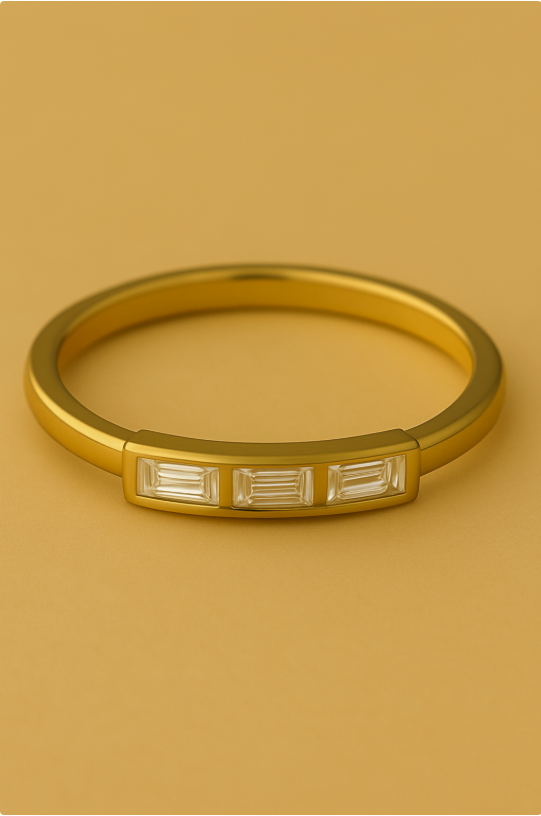
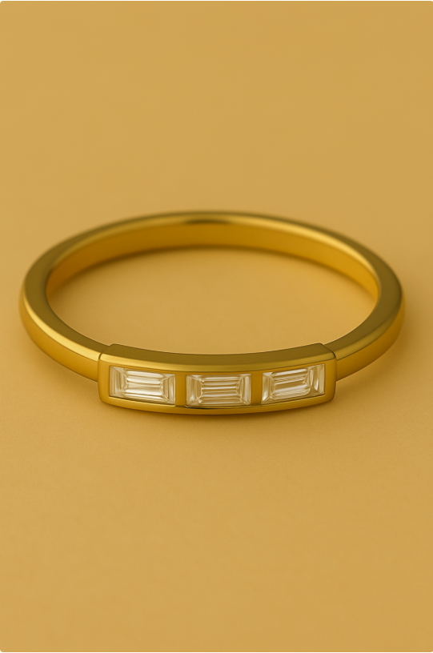

2025 Jewelry Trends
Every year, Kool Concepts decodes the shifts shaping the jewelry world—looking to the past, tracking the present, and forecasting what’s next. 2025 is the year of personalization: pieces that go beyond beauty to carry sentiment, celebrate identity, and honor legacy. To capture this movement, we’ve created a curated collection of proposals—each one a different lens on how personalization can be designed, marketed, and worn today.
Modern Heirlooms
Your Story, In Stone
Heirlooms are often passed down — worn by mothers, grandmothers, and generations before.
But few collections ask a deeper question: Where do heirlooms begin?
Modern Heirlooms is a jewelry collection for the woman who wants to be the beginning.
This proposal was born from a new generation’s desire to celebrate their own defining moments —
not just with fashion, but with forever pieces that hold meaning.
From quiet victories to bold beginnings, this line transforms modern milestones into personal treasures.
It’s not about status.
It’s about sentiment.
It’s not about waiting to inherit.
It’s about choosing to begin.
Why Now?
Women today are choosing themselves — celebrating promotions, healing journeys, fresh starts, and personal growth.
Modern Heirlooms offers her a way to mark those moments — beautifully and meaningfully.
This is jewelry for a new kind of legacy: Not inherited — created.
Collection Details:
| Category | Product Names | Emotional Role | Notes |
|---|---|---|---|
| Trilogy Rings | Mother Stone Rings | Honoring past, present, and future |
Trio of contrasting diamonds |
| Necklace | Memory Bar Necklace | One stone for every year that changed you |
A slim, horizontal bar pendant set with a diamond to symbolize growth over time |
Key Design Elements Across the Collection:
Minimalist Foundations
Clean, architectural silhouettes that feel timeless yet modern — easily stackable or layered, with a nod to quiet luxury.
Universal Milestone Themes
While not explicitly labeled, the pieces align with key occasions:
- -First job or promotion
- -Recovery or Solo Milestone
- -Birth of a child
- -Graduation or Rite of Passage
- -Remembrance or Transformation
- -Bridal or Commitment


The Cipher Collection
Delicate language. Loud meaning
In a world where personalization has become predictable, the Morse Code Collection offers something rare: jewelry that speaks in secret.
Crafted using carefully placed round and baguette-cut diamonds to mimic the dots and dashes of Morse code,each piece encodes initials, dates, or words in a way that is deeply personal — and beautifully discreet.
These are not basic monograms. They’re messages in stone.
Jewelry that speaks without saying a word.
Concept Highlights
Set in seamless patterns that spell out initials — only the wearer knows the meaning.
Why it’s special:
It’s more than just initials—it becomes a love note, a mantra, or even a moment captured in code. With a minimalist, geometric design that carries deep emotional value, each piece is crafted to feel timeless yet personal. The style is gender-neutral and stackable, allowing wearers to layer their own stories and connections. Subtle yet powerful, the design holds hidden storytelling, making it not just jewelry, but a narrative you carry with you.
Examples:

 

Mystics & Motifs
Wear your magic — One charm, One card, One story at a time
The Mystics and Moifs collection is a Tarot Charm Collection that invites the modern mystic to carry meaning, intuition, and intention in everyday life. Each charm represents a Major Arcana card—thoughtfully translated into elegant, wearable symbols of transformation, strength, and self-trust. Designed for stacking, layering, or gifting, this collection allows your customer to craft their own spiritual story, one charm at a time. In a world seeking deeper connection, this is more than jewelry—it’s modern mythology made personal.
Concept Highlights
Tarot has always been more than fortune-telling—it's a reflection of life’s journey. From The Fool (new beginnings) to The Empress (divine feminine) to The Star (hope and clarity), each charm distills the essence of a Tarot archetype into a modern, minimalist design.
Whether worn as a protective talisman or a daily reminder, these pieces connect the wearer to something greater—intuition, intention, and inner strength.
Product Format:
Why This Collection Matters Now:
The Cultural Shift
In recent years, there's been a notable rise in the popularity of astrology and tarot, especially among younger generations. Platforms like TikT ok and Instagram have become hubs for astrological content, with Gen Z and Millennials seeking tools for self-reflection and guidance. Astrology and tarot offer frameworks for understanding oneself and navigating life's uncertainties, leading to their integration into daily routines and wellness practices.
Coquette Charm
A Love Letter to Femininity
2025 is the year of hyper-femininity—a powerful revival of softness, sweetness, and unapologetic self-expression. Leading the way is the coquette aesthetic, a viral movement embraced by Gen Z and Millennials that fuses vintage charm with modern luxury. Picture bows, butterflies, hearts, and delicate, doll-like details—reimagined through refined design and elevated with playful sophistication.
Concept Highlights
Collection Details:
| Category | Product Names | Emotional Role | Notes |
|---|---|---|---|
| Charms/Rings/Earrings/Necklaces | Bow Motifs | Celebrating feminine confidence | Graceful yet playful designs that highlight strength through softness |
| Charms/Rings/Earrings/Necklaces | Butterfly Motifs | Symbol of transformation and freedom | Delicate detailing that reflects growth, renewal, and self-discovery |
| Charms/Rings/Earrings/Necklaces | Heart Silhouttes | Eternal icons of romance and self-love | Reimagined in modern, refined forms blending sentiment with sophistication |
Why This Collection Matters Now:
Cultural Phenomenon
Whimsical yet refined, these pieces embody the duality at the heart of the coquette trend: softness paired with strength, playfulness with elegance. From TikTok to Pinterest, the movement reflects a cultural longing for nostalgia, romance, and self-expression—where bows, butterflies, and hearts become symbols of identity, transformation, and love.